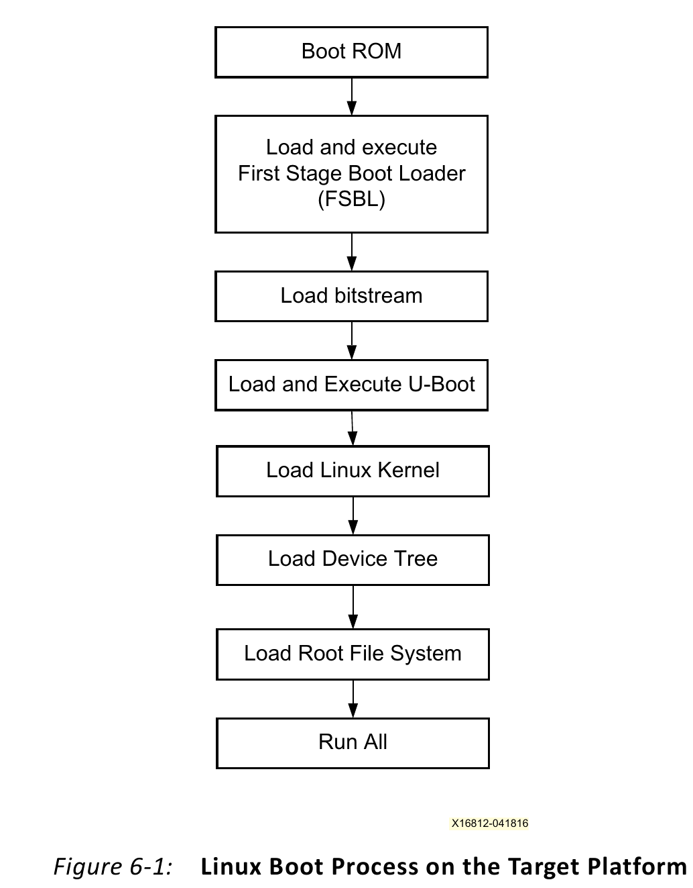
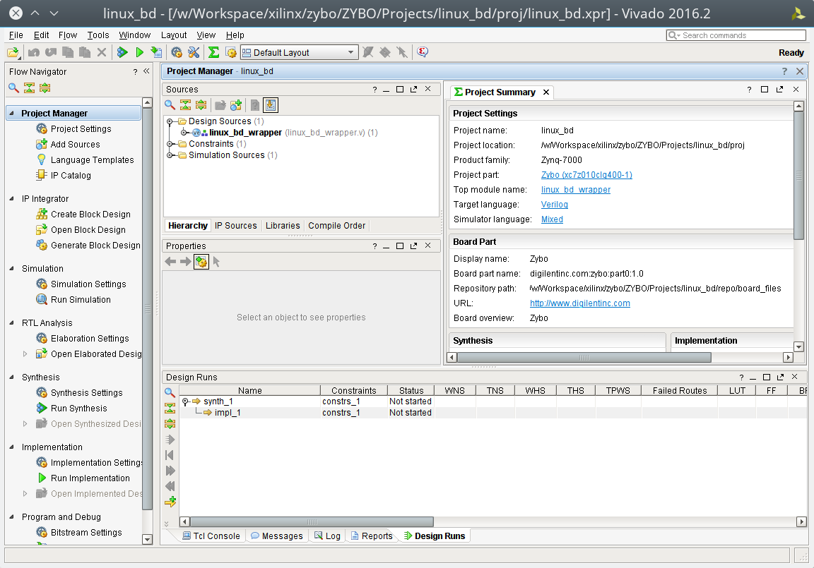
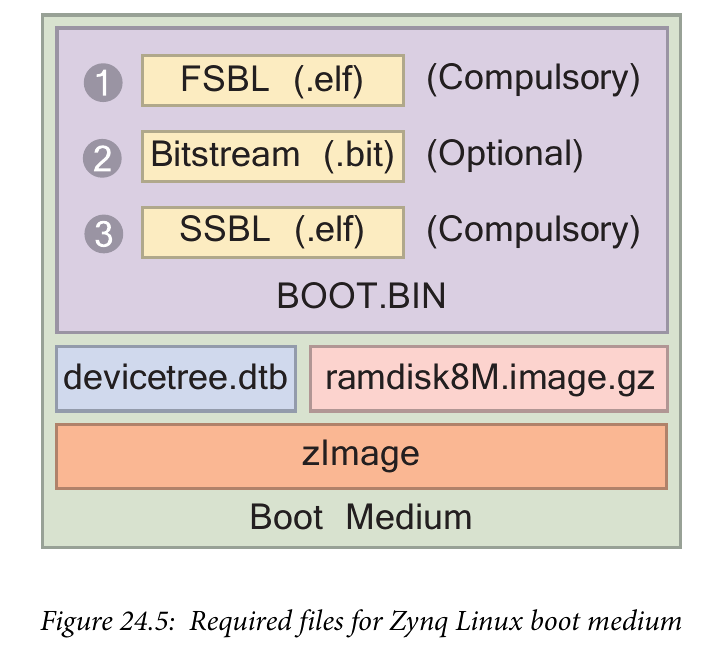

在 zybo board 開發記錄: Zynq 與 LED 閃爍控制 一文中我們談到了如何透過 C 語言撰寫獨立的程式，讓它控制 Zynq 的處理器系統 (Processing System, PS) 去閃爍 LED 的亮暗。既然 Zynq 的處理器系統 (Processing System, PS) 使用的是 ARM Cortex-A9 的處理器，那當然也可以讓我們跑 Linux 在 Zybo Board 上。
本文將簡述如何自行編譯 u-boot 以及 Linux Kernel，並搭配 Busybox 製作簡單的 RootFS 執行於 Zybo Board 上。
開發目標
在這次的開發中，我們要編譯 u-boot、Linux，並使用 Busybox 製作簡單的 Rootfs 後，透過製作 SD 卡來讓 Zybo Board 透過 SD 卡開機。
要注意到的是，由於我們要透過 SD 卡開機進入到 Linux 系統，因此我們要透過 JP5 去更改開機模式。
了解開機流程
既然我們要讓 Zybo board 執行 Linux 系統，就要先來了解一下開機流程，才知道我們大概需要準備哪些東西。從 Zynq-7000 All Programmable SoC: Embedded Design Tutorial - A Hands-On Guide to Effective Embedded System Design (UG1165) 可以看到 Zynq-7000 執行 Linux 系統的開機流程圖。

也就是說，當開始提供電源給 Zynq 處理器系統 (Processing System, PS) 並完成重置(reset) 後，Zynq 內建的 Boot ROM 會去載入 第一階段開機程式 (First Stage Boot Loader, FSBL) ，接著載入 位元流 (bitstream) 去初始化整個 可程式邏輯(Programmable Logic, PL) 。 完成後，接下來就是透過 U-Boot 去載入 Linux Kernel、Device Tree 以及 Root File System。
了解了這個，我們就知道我們大概要準備哪些東西了。
設定好環境
在安裝玩 Vivado 與 Xilinx SDK 後，實際上包含 Zynq 在用的 ARM toolchain 亦同時被安裝到系統中，我們只要使用 source 命令即可讓當前的環境知道 xilinx-arm toolchain 的路徑。這邊以 Viavdo 2016.2 作為範例。
coldnew@gentoo ~ $ source /opt/Xilinx/Vivado/2016.2/settings64.sh
這樣就可以獲得 arm-xilinx-* toolchain 的命令，實際上有哪些呢? 輸入個 arm-xilinx- 按下 TAB 看看
coldnew@gentoo ~ $ arm-xilinx- arm-xilinx-eabi-addr2line arm-xilinx-eabi-gcc-4.9.2 arm-xilinx-eabi-objcopy arm-xilinx-linux-gnueabi-ar arm-xilinx-linux-gnueabi-gcc-ar arm-xilinx-linux-gnueabi-objdump arm-xilinx-eabi-ar arm-xilinx-eabi-gcc-ar arm-xilinx-eabi-objdump arm-xilinx-linux-gnueabi-as arm-xilinx-linux-gnueabi-gcc-nm arm-xilinx-linux-gnueabi-ranlib arm-xilinx-eabi-as arm-xilinx-eabi-gcc-nm arm-xilinx-eabi-ranlib arm-xilinx-linux-gnueabi-c++ arm-xilinx-linux-gnueabi-gcc-ranlib arm-xilinx-linux-gnueabi-readelf arm-xilinx-eabi-c++ arm-xilinx-eabi-gcc-ranlib arm-xilinx-eabi-readelf arm-xilinx-linux-gnueabi-c++filt arm-xilinx-linux-gnueabi-gcov arm-xilinx-linux-gnueabi-size arm-xilinx-eabi-c++filt arm-xilinx-eabi-gcov arm-xilinx-eabi-size arm-xilinx-linux-gnueabi-cpp arm-xilinx-linux-gnueabi-gdb arm-xilinx-linux-gnueabi-sprite arm-xilinx-eabi-cpp arm-xilinx-eabi-gdb arm-xilinx-eabi-sprite arm-xilinx-linux-gnueabi-elfedit arm-xilinx-linux-gnueabi-gprof arm-xilinx-linux-gnueabi-strings arm-xilinx-eabi-elfedit arm-xilinx-eabi-gprof arm-xilinx-eabi-strings arm-xilinx-linux-gnueabi-g++ arm-xilinx-linux-gnueabi-ld arm-xilinx-linux-gnueabi-strip arm-xilinx-eabi-g++ arm-xilinx-eabi-ld arm-xilinx-eabi-strip arm-xilinx-linux-gnueabi-gcc arm-xilinx-linux-gnueabi-nm arm-xilinx-eabi-gcc arm-xilinx-eabi-nm arm-xilinx-linux-gnueabi-addr2line arm-xilinx-linux-gnueabi-gcc-4.9.2 arm-xilinx-linux-gnueabi-objcopy
如果你系統上已經有其他的 ARM toolchain 的話，可以考慮跳過這一步驟，接下來要格式化 Micro SD 卡。
格式化 MicroSD 卡
在這次的開發中，我們要設定 MicroSD 卡片成兩個分區，第一個是 fat32 格式，第二個則使用 ext4 格式，若不會使用 fdisk 命令的話，可以透過 gparted 來進行格式化，以下是我格式化卡片的範例 (8GB 卡片)。

(實際上在本文的範例中，只會用到第一個分區，第二個分區是為了往後文章要開機到大一點的 rootfs 準備的。)
編譯 u-boot
我們首先去 GitHub 下載 DigilentInc 加入 zybo board 後的 u-boot 版本，要注意這邊要選擇 master-next 分支。
git clone https://github.com/DigilentInc/u-boot-Digilent-Dev.git -b master-next
完成後進入到該資料夾
coldnew@gentoo ~ $ cd u-boot-Digilent-Dev
編譯 u-boot，記得指派編譯目標為 zynq_zybo_config
coldnew@gentoo ~/u-boot-Digilent-Dev $ CROSS_COMPILE=arm-xilinx-linux-gnueabi- make zynq_zybo_config coldnew@gentoo ~/u-boot-Digilent-Dev $ CROSS_COMPILE=arm-xilinx-linux-gnueabi- make
編譯完成後，注意一下 u-boot 這個檔案，他就是我們等等要用到的 u-boot 執行檔，不過由於 Xilinx Tool 要找有 .elf 副檔名的檔案，因此我們把它複製成 u-boot.elf 。
coldnew@gentoo ~/u-boot-Digilent-Dev $ cp u-boot u-boot.elf
編譯 Linux kernel
編譯好 u-boot 後，接下來就是編譯 Linux Kernel 了，我們一樣選擇 DigilentInc 加入 zybo board 後的 Linux Kernel 版本，記得要選 master-next 分支。
git clone https://github.com/DigilentInc/Linux-Digilent-Dev.git -b master-next
接著，當然就是編譯了，不過在這之前請先確定你有裝 u-boot-tools 這套件，我們需要裡面的 mkimage 指令，Gentoo Linux 可以直接用以下命令來安裝。
coldnew@gentoo ~ $ sudo emerge dev-embedded/u-boot-tools
完成後進入 Linux Kernel 資料夾
coldnew@gentoo ~ $ cd Linux-Digilent-Dev
編譯我們需要的 uImage 文件，記得要指定 config 為 xilinx_zynq_defconfig 以及設定 UIMAGE_LOADADDR 為 0x8000 。
coldnew@gentoo ~/Linux-Digilent-Dev $ ARCH=arm CROSS_COMPILE=arm-xilinx-linux-gnueabi- make xilinx_zynq_defconfig coldnew@gentoo ~/Linux-Digilent-Dev $ ARCH=arm CROSS_COMPILE=arm-xilinx-linux-gnueabi- make coldnew@gentoo ~/Linux-Digilent-Dev $ ARCH=arm CROSS_COMPILE=arm-xilinx-linux-gnueabi- make UIMAGE_LOADADDR=0x8000 uImage coldnew@gentoo ~/Linux-Digilent-Dev $ ARCH=arm CROSS_COMPILE=arm-xilinx-linux-gnueabi- make zynq-zybo.dtb
編譯完後，我們會需要 arch/arm/boot/uImage 以及 arch/arm/boot/dts/zynq-zybo.dtb 這兩個檔案，後者就是 device tree 編譯出來的資料檔。
由於放入到 SD 卡上的 device tree 檔案名稱為 devicetree.dtb ，因此這邊將 zynq-zybo.dtb 改一下名。
coldnew@gentoo ~/Linux-Digilent-Dev $ cp arch/arm/boot/dts/zynq-zybo.dtb devicetree.dtb
如果你想手動修改 Device Tree 並再重新編譯的話，也可以這樣去產生我們要的 devicetree.dtb 。
coldnew@gentoo ~/Linux-Digilent-Dev $ ./scripts/dtc/dtc -I dts -O dtb -o devicetree.dtb arch/arm/boot/dts/zynq-zybo.dts
編譯 BusyBox
Busybox 是一個非常有趣的程式，舉凡我們在 Linux 下最常用的命令如 ls、cd 等到 sed、vi 他都具有相對應的簡單實現，此外，這些命令實際上都只是一個軟連結 (symlink) 連結到名為 busybox 的執行檔，也就是說，如果我們將 busybox 進行靜態編譯 (static link)，則製作出來的系統整體大小大約為 2 MB (kernel) + 1.4 MB (busybox)，而這個系統卻又可以具有許多 UN*X 下的常用命令，也因此 busybox 很常用於空間有限的系統。
我們在這個開發過程中，由於只是驗證執行 Linux 系統的功能，因此選用 Busybox 來作為我們的 rootfs。
首先先下載 Busybox 的原始碼，這裡選用 1_25_stable 這個穩定分支
git clone git://git.busybox.net/busybox -b 1_25_stable
進行我們自己的設定
coldnew@gentoo ~/busybox $ ARCH=arm CROSS_COMPILE=arm-xilinx-linux-gnueabi- make menuconfig
在進行設定時有以下幾點要確實注意，我們要將 busybox 編譯為靜態連結，並且增加 init 功能，主要設定如下:
Busybox Settings --->
Build Options --->
[*] Build BusyBox as a static binary (no shared libs)
Init Utilities --->
[*] init
Login/Password Management Utilities --->
[*] getty
Shells --->
[*] ash
設定完成後開始進行編譯
coldnew@gentoo ~/busybox $ ARCH=arm CROSS_COMPILE=arm-xilinx-linux-gnueabi- make
編譯完成後透過 make install 命令，會將編譯出來的 busybox 與軟連結(symlink)產生在 _install 資料夾內
coldnew@Rosia ~/busybox $ ARCH=arm CROSS_COMPILE=arm-xilinx-linux-gnueabi- make install
建立一些缺少的資料夾 (/dev、/sys …etc)
coldnew@gentoo ~/busybox $ cd _install && mkdir -p proc sys dev etc/init.d root
建立 etc/init.d/rcS 作為啟動腳本，並添加以下內容
coldnew@gentoo ~/busybox/_install $ vim etc/init.d/rcS #!/bin/sh mount -t proc none /proc mount -t sysfs none /sys /sbin/mdev -s
將 etc/init.d/rcS 加入可執行權限
coldnew@gentoo ~/busybox/_install $ chmod +x etc/init.d/rcS
建立 etc/inittab ，這會讓我們可以透過 UART 登入 zybo board
coldnew@gentoo ~/busybox/_install $ vim etc/inittab #!/bin/sh # Init script ::sysinit:/etc/init.d/rcS # Start shell on the serial ports ::respawn:/sbin/getty -L ttyPS0 115200 vt100 # What to do when restarting the init process ::restart:/sbin/init # What to do before rebooting ::shutdown:/bin/umount -a -r
設定預設的 /etc/passwd 檔案，我們要讓 root 用戶登入時不用輸入密碼
coldnew@gentoo ~/busybox/_install $ vim etc/passwd root::0:0:root:/root:/bin/sh
建立 /init 並軟連結到 /sbin/init ，避免 Linux Kernel 開機時找不到 rootfs 的 init。
coldnew@gentoo ~/busybox/_install $ ln -s /sbin/init init
接下來，由於這次我們只是要開機到 ramdisk 上的 rootfs, 因此將 busybox 做出的 rootfs 打包成 cpio 格式。
coldnew@gentoo ~/busybox/_install $ find . | sudo cpio -H newc -o | gzip -9 > ../uramdisk.cpio.gz
再透過 mkimage 將這個 uramdisk.cpio.gz 檔案轉成 uboot 用的 uramdisk.image.gz
coldnew@gentoo ~/busybox/_install $ mkimage -A arm -T ramdisk -C gzip -d ../uramdisk.cpio.gz ../uramdisk.image.gz Image Name: Created: Sun Jul 17 19:02:08 2016 Image Type: ARM Linux RAMDisk Image (gzip compressed) Data Size: 1042106 Bytes = 1017.68 kB = 0.99 MB Load Address: 00000000 Entry Point: 00000000
在這邊的這個 uramdisk.image.gz 就是我們開機會進入到的 rootfs，也是我們等等要放到 SD 卡第一個磁區的檔案。
編譯位元流 (bitstream)
在 zybo board 開發記錄: 升級 Digilent 提供的設計檔 一文中，我們提到了怎樣升級 Digilent 提供的預先定義好接腳的設定檔 (zybo_base_system) ，這次的專案，我們就直接用這個設定檔案來進行 Linux 開機的動作。
首先你必須根據該篇文章，將你的 Zybo board 設定檔案升級到你用的 Vivado 版本，完成後我們重新建立一個乾淨的專案。
先來把先前生成的舊專案清掉:
coldnew@gentoo ~/ZYBO/Projects/linux_bd/proj $ sh cleanup.sh
接下來用 Vivado 2016.2 重新生出新的專案 ~
coldnew@gentoo ~/ZYBO/Projects/linux_bd/proj $ /opt/Xilinx/Vivado/2016.2/bin/vivado -mode batch -source create_project.tcl
完成後，會看到 ZYBO/Projects/linux_bd/proj 目錄變成這樣:
coldnew@gentoo ~/ZYBO/Projects/linux_bd/proj $ tree -L 1 . <b> ├── cleanup.cmd ├── cleanup.sh ├── create_project.tcl ├── ip_upgrade.log <g> ├── linux_bd.cache <b> ├── linux_bd.hw <b> ├── linux_bd.ip_user_files <b> ├── linux_bd.sim <b> ├── linux_bd.srcs <b> ├── linux_bd.xpr ├── vivado.jou └── vivado.log <g> 5 directories, 7 files
我們使用 Vivado 打開 linux_bd.xpr 這個專案。

如果你有興趣看他生出來的 Block Design 是怎樣的，也可以切到 Block Design 那頁看看
我們直接點選 Program and Debug -> Generate Bitstream 產生我們要的位元流 (bitstream)
建立 FSBL
到此，我們除了 第一階段開機程式 (First Stage Boot Loader, FSBL) 外，其他的程式都已經編譯出執行檔了，讓我們來處理 FSBL 吧。
首先點選 File -> Export -> Export hardware
記得要勾選 Include bitstream
完成後，執行 Xilinx SDK
透過 File -> New -> Application Project 去建立我們的新專案
設定這個專案為 standalone 的專案
選擇樣板為 Zynq FSBL
選擇我們剛剛建立的 FSBL 專案，按下右鍵選擇 Build Project 進行編譯
建立 BOOT.bin
編譯完 FSBL 後，選擇 Xilinx Tools -> Create Boot Image 去建立我們的 BOOT.bin
在 Boot image partitions 那邊，加入我們的 bitstream 以及 u-boot 檔案，記得要按照順序加入。
完成後，點選 Create Image 就會產生我們要的 BOOT.bin 到指定路徑。
在這個步驟中，如果你是指令控的話，我們也可以在產生 FSBL.elf 後，建立一個名為 boot.bif 的檔案，其內容如下
//arch = zynq; split = false; format = BIN the_ROM_image: { [bootloader]/path/to/fsbl-build/fsbl.elf /path/to/linux_bd/linux_bd.sdk/linux_bd_wrapper.bit /path/to/u-boot/u-boot.elf }
接下來透過 bootgen 這個命令去產生 BOOT.bin
coldnew@gentoo ~ $ bootgen -image boot.bif -w on -o i BOOT.bin
將檔案複製到 Micro SD 卡
好了，我們已經完成了所有準備動作，是時候將檔案放到 Micro SD 卡並看看結果了，在本文中我們會將以下幾個檔案放到 第一個分割區 (fat32) 。
coldnew@gentoo /tmp/sdc1 $ tree -L 1
.
├── BOOT.bin
├── devicetree.dtb
├── uImage
└── uramdisk.image.gz
0 directories, 4 files
也就是說我們的 SD 卡有的東西，要像 The Zynq Book p.439 這張圖那樣

測試開機與結果
是時候來測試結果了，要注意到你的 Zybo Board 的 JP5 要設定成下面這樣，這樣給電時，Zynq 才會讀取 SD 卡上面的 u-boot 並將位元流 (bitstream) 燒錄到 FPGA 中。

插入剛剛建立好的 SD 卡，並提供電源後，我們可以使用可以接收 UART 相關的程式，如 gtkterm、teraterm、screen、emacs 等，啟動它並開啟 /dev/ttyUSB1 後，設定 baudrate 為 115200 ，就可以看到開機到 rootfs 的狀態。
取得程式碼
本文的範例已經放置於 GitHub 上，你可以到以下的 repo 去尋找，具體專案對應的教學名稱，則請參考 README.md 檔案